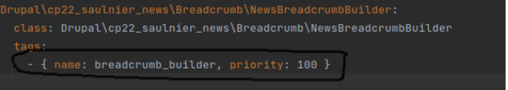
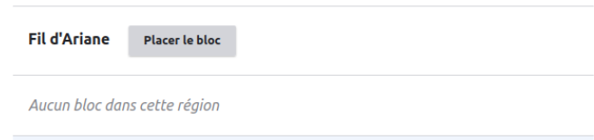
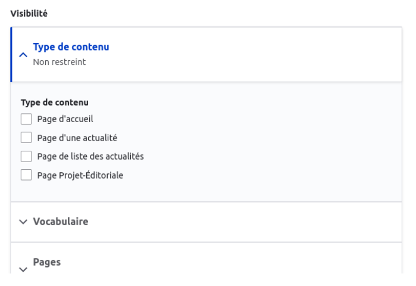
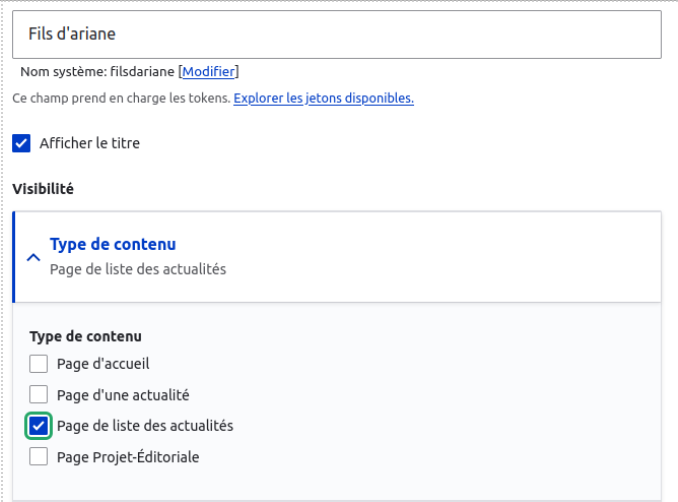
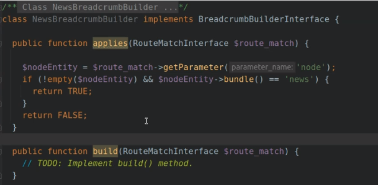

Le BreadCrumb est un plugin qui s'implémente sur chaque page
On doit le définir comme les autres plugin
On peut lui importer une logique et des données
Il faut le déclarer comme un plugin
On peut déclarer et configurer son template
On peut utiliser un module contrib
On peut configurer le fil d’arianne avec un hook
Pour quelle utilité ?
Le fil d’arianne est un block que l’on vient implémenter sur nos pages
Chez Adimeo on fait un breadcrumb par module qui s’occupe d’un type de contenu particulier comme cela on peut importer cette classe dans n’importe quel module.
Drupal a par défaut un fil d’arianne dans le système qui nomme les pages courantes.
Pour utiliser notre builder custom on effectue l’injection dans les services.
Comment créer une classe breadcrumb
créer une classe : news breacrumb builder
implementer : breadcrumb builder interface
module : cp22_saulnier_news dans le namespace breadcrumb
Comme la classe implémente l’interface BreadcrumbBuilder, 2 méthodes sont obligatoires:
Méthode applies()
Permet de définir dans quels cas appeler notre builder de fil d’Ariane, elle retournera TRUE ou FALSE selon le cas.
Dans cette méthode on vérifie la route sur laquelle on se trouve pour pouvoir définir le contexte dans lequel on se trouve. On utilise route match pour cela qui est le seul moyen de savoir ou l’on se trouve.
Méthode build()
Retourne un objet Breadcrumb, c’est notre fil d’Ariane. C’est l’objet même breadcrumb.Ici on construit le retour de son builder
Le route match
Technique 1 : On verifie le paramètre node pour savoir si il existe :
Si il existe on est sur une page de node et on renvoi true
si il n’existe pas on est sur une autre page et on renvoi false
Comment déclarer un breadcrumb dans les services ?
Insérer le breadcrumb dans le service container
Avec un nom
Avec un nom de class
Avec un tags
Cette nomenclature - { } indique que c’est un tableau
BreadCrumb Builder :
Permet d’indiquer à Drupal que notre service déclaré est un breadcrumb builder.
Cette déclaration indique que le breadcrumb utilise le breadcrumb interface et qu’il va créer un fil d’arianne. C’est indispensable pour que Drupal puisse l’utiliser en tant que tel
La priorité est facultative : elle indique à Drupal l'ordre d'utilisation des Breadcrumb
Priority :
Indique la priorité pour la méthode applies. Cela lui permet de d’indiquer en cas de conflit (car plusieurs services répondent au critère). Ainsi la priorité la plus haute sera le service utilisé en premier.
Plus le numero est haut plus on a la garantie que celui ci passe en premier.
Lorsqu’une page s’affiche, Drupal va consulter tous les breadcrumb possible à charger en les consultants par order de priorité. Lorsqu’il rencontre le breadcrumb qui correspond à ce qu’il recherche, il le charge.
Et arrête de chercher d’autres breadcrumb.
Des arguments si il y a des injections de dépendance dans le __construct

Comment placer le breadcrumb ?
Dans le backOffice on va dans mise en place des block

On place le fil d'arianne système
Pour la visibilité du fil d’arianne système on le met partout ou l’on veut voir apparaître, c'est à dire ne cocher aucune cases
Affichage du breadCrumb partout
Dans une bonne procédure, on laissera le breadcrumb builder faire le chargement des différents breadcrumb. Ainsi on ne coche rien pour l'affichage des pages et à quels endroits

Affichage du breadcrumb sur certaines pages
Cette procédure est utilisée si l'on ne veut pas voir de breadcrumb affiché sur une page. On choisi le breadcrumb système qui sera vide.
Cette pratique est un peu du bricolage mais fonctionne

Comment créer la méthode d'affichage ??
Lorsque l’on place notre BreadCrumb on doit vérifier la priorité pour que notre breadcrumb prenne la priorité sur les autres breadcrumb.
Avec un ctr + shift + dans le fichier web on peut retrouver les autres breadcrumb.
La méthode applies()
Si le retour de breadcrumb affiche un erreur il faut travailler sur le applies
Définition des paramètres
Avec le paramètre de route_match on récupère les informations dans l’url (comme le get dans le requestStack)
Dans l'application, je choisi la methode avec laquelle je recupere le getParameter('node’) pour sélectionner les nodes puis je recupere le type de node.
Si ce type de node existe et que le nodeType est celui que l’on désire «news» en l’occurence on retourne true
Si ce type n’existe pas je retourne false

Attention à bien indiquer la condition de vérification Isset ou empty pour éviter que cela crache.
En effet la verfiifcation sur un element vide ou qui n’existe pas créera un problème.